Welcome to your health and safety training. This course will help keep you and your colleagues safe at work.
📚 Introduction - Why Safety Matters
▼
🎯 Your Safety is Everyone's Business
Every person in our food factory has a part to play in keeping everyone safe. This includes you!
What You'll Learn Today
How to work safely with forklift trucks
Safe use of pallet trucks
Machine guarding and interlocks
Chemical safety in food production
Ladder safety basics
Manual handling without injury
📋 UK Law Says
Under the Health and Safety at Work Act 1974, both you and your employer have legal duties:
Your employer must: Provide safe equipment, training, and a safe workplace
You must: Follow safety rules, use safety equipment, and report dangers
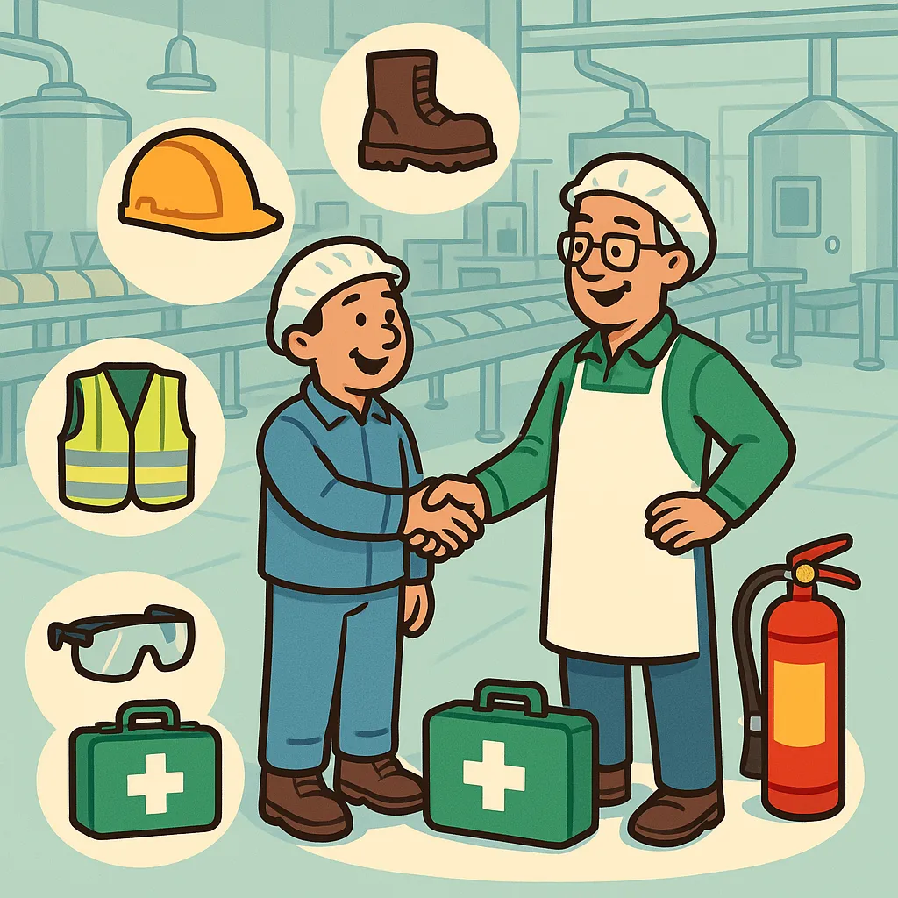
🤔 Click here: Why do accidents happen in food factories?
Most accidents happen because:
People rush or take shortcuts
Equipment isn't checked properly
Training isn't followed
Safety equipment isn't used
Good news: Most accidents can be prevented!
🚛 Forklift Trucks (FLTs) - Staying Safe
▼
⚠️ Did You Know?
Forklift accidents cause serious injuries every year in UK food factories. Many could be prevented with proper safety.
🎬 Watch: FLT Safety
This short video tells you why to pay attention.
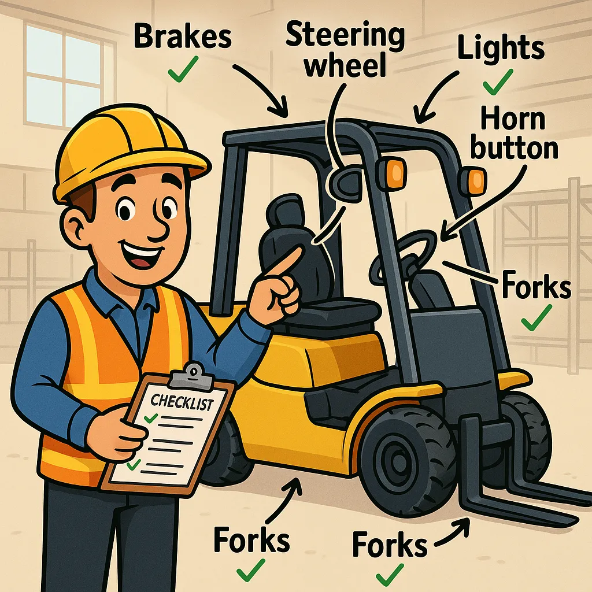
Before You Start - Daily Checks
Check These Every Time:
Brakes work properly
Steering moves smoothly
Forks are not bent or cracked
Warning lights and horn work
No oil or water leaks
Tyres are in good condition
🚦 Click to reveal: The Golden Rules of Forklift Safety
Speed: Never go faster than walking pace
Loads: Keep forks low when moving
Corners: Slow down and sound your horn
People: Never let anyone ride on the forklift
Parking: Lower forks, apply handbrake, remove key
Working Around Forklifts
👥 If You're NOT the Driver
Stay away from operating forklifts
Never walk under raised loads
Make eye contact with drivers before crossing their path
Use designated walkways
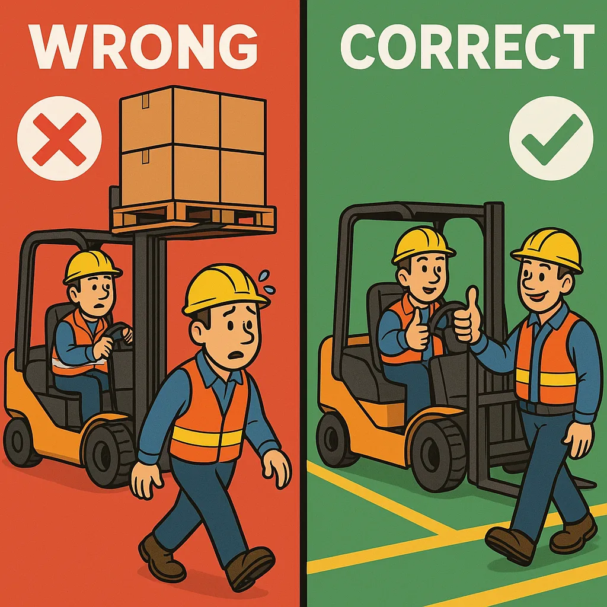
🚨 Real Example
A worker fell 8 metres from forklift forks when trying to change a light bulb. The company was fined £200,000. Never stand on forklift forks or pallets for any reason!
🆘 What to do in an emergency?
Stop the forklift immediately
Apply the handbrake
Turn off the engine
Get help from a supervisor
Report the incident
Knowledge Check
What is the most important rule for a pedestrian when walking near an operating forklift?
📦 Pallet Trucks - Manual and Electric
▼
💡 Quick Fact
Pallet trucks cause many back injuries. Most happen because people don't follow simple safety rules.
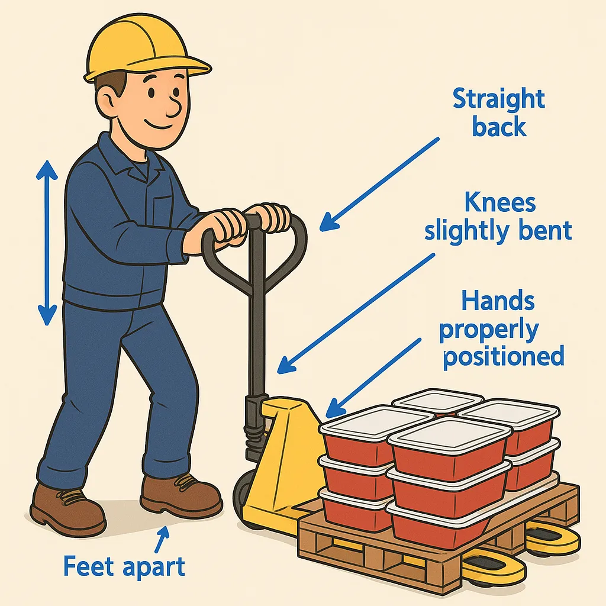
Manual Pallet Trucks
✅ Safe Use Steps
Check: Wheels roll freely, handle works
Position: Forks fully under the pallet
Lift: Pump handle until load clears floor
Move: Keep load low, push don't pull
Watch: Look where you're going
⚖️ Weight Limits Matter
Manual trucks: Usually 2-3 tonnes maximum
Check the label on your truck
Never exceed the limit
Get help with heavy loads
Electric Pallet Trucks
Before Each Use:
Battery charge level is good
Emergency stop button works
Forks move up and down smoothly
Steering handle is secure
Warning devices work
🎯 Click for: Common Pallet Truck Accidents and How to Avoid Them
Accident Type
How to Prevent
Trapped fingers
Keep hands away from moving parts
Foot injuries
Wear safety boots, watch your feet
Back strain
Don't overload, get help when needed
Collisions
Look where you're going, sound horn
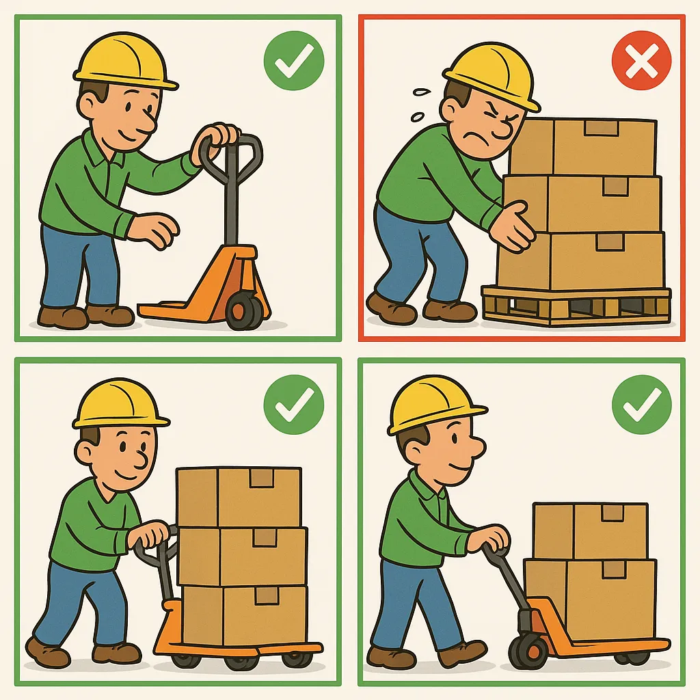
Knowledge Check
What is the recommended way to move a loaded manual pallet truck to ensure the best control and visibility?
⚙️ Machine Safety & Guarding
▼
⚠️ Moving Parts are Dangerous!
Machines can cause serious injuries like cuts, crushing, or even amputation if you're not careful. Safety guards are there to protect you.
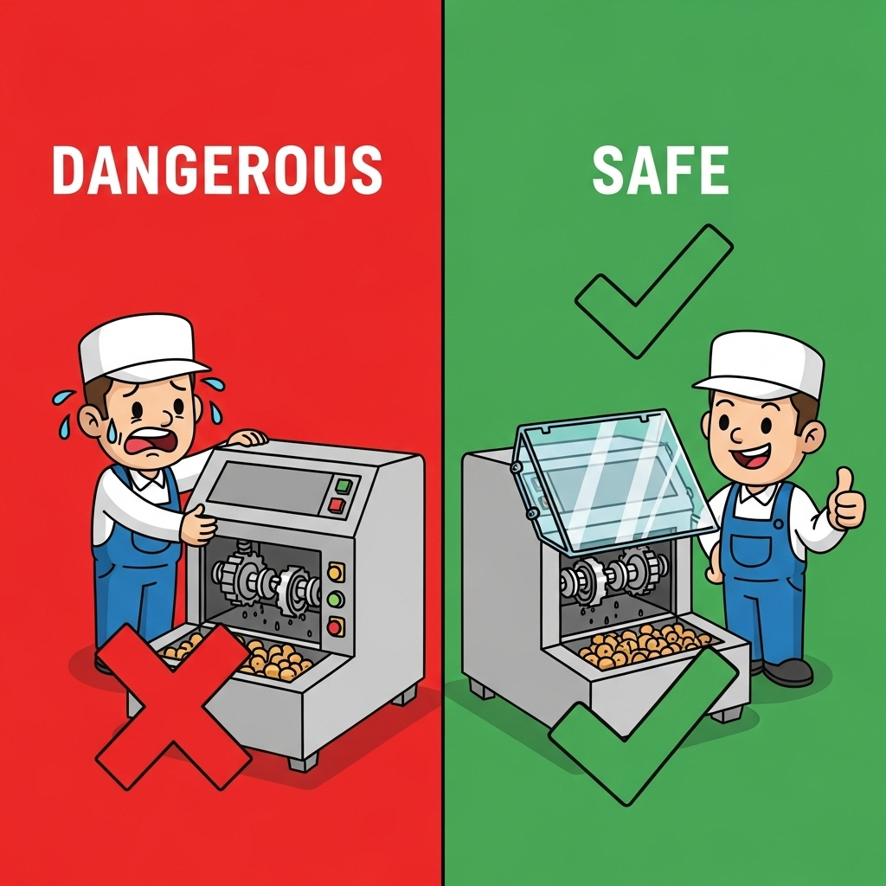
NEVER
Tamper with, bypass, or remove a safety guard or interlock while a machine is operating.
What are Guards For?
Guards are physical barriers that prevent you from coming into contact with dangerous moving parts, hot surfaces, or electrical hazards.
🤔 Click to learn: What is a Safety Interlock?
An interlock is a special safety switch connected to a guard (like a gate or door).
If you open the guard, the interlock automatically stops the machine.
The machine cannot restart until the guard is closed again.
Think of it like your microwave: it stops the second you open the door. Never try to defeat these switches!
Lockout/Tagout (LOTO) for Cleaning & Maintenance
🛑 Before You Clean or Fix a Machine
If you need to work on a machine, it must be made safe first using a Lockout/Tagout procedure. This means:
The machine is turned off.
The power source (e.g., electrical switch) is locked in the 'OFF' position with a padlock.
A tag is attached saying "DANGER - DO NOT OPERATE".
Only trained and authorised staff can perform LOTO.
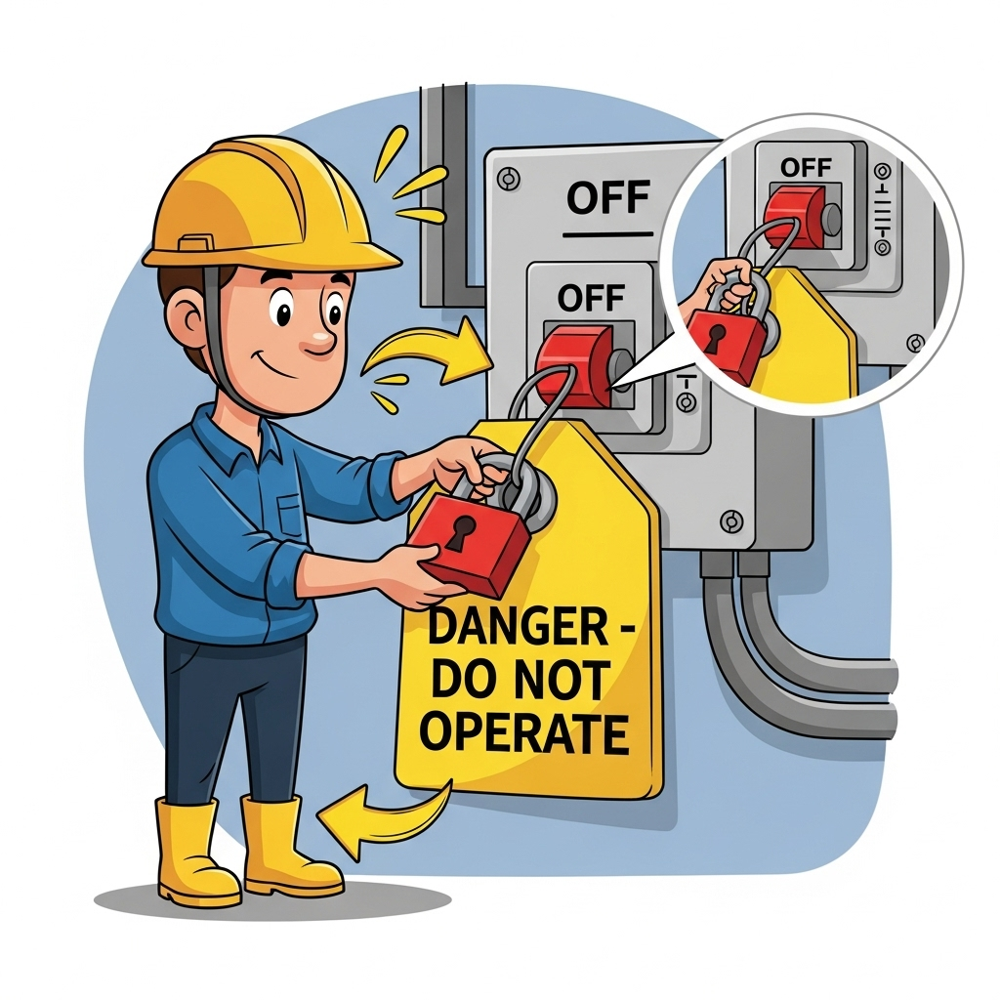
Your Responsibilities:
Never use a machine if the guard is missing or damaged.
Report any faulty guards or interlocks to your supervisor immediately.
Do not wear loose clothing, jewellery, or long, untied hair around machinery.
Follow all LOTO procedures you have been trained on.
Never try to "fix" a jam while the machine is running.
Knowledge Check
You notice a machine's safety guard has been removed for a quick job. What should you do?
🧪 Chemical Safety - COSHH Regulations
▼
☢️ Important
Food factories use many cleaning chemicals. Under UK COSHH regulations, you must know how to use them safely.
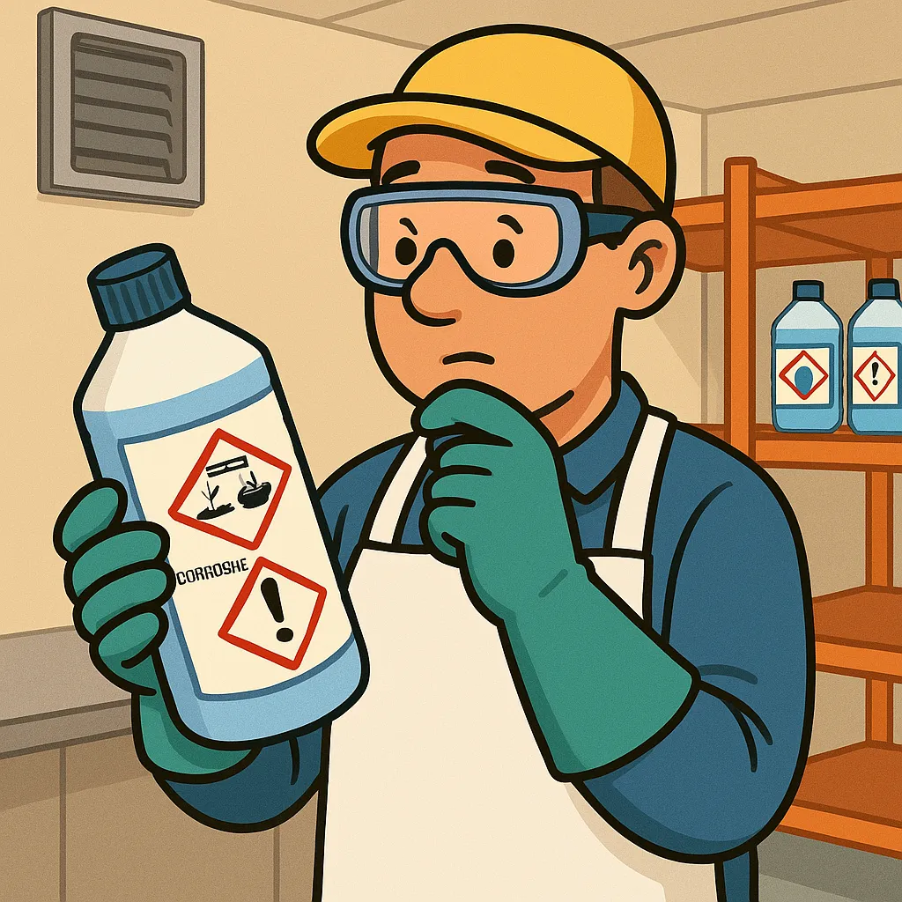
Understanding Chemical Labels
🏷️ What to Look For
Product name: What the chemical is called
Hazard symbols: Pictures showing dangers
Signal words: "Danger" or "Warning"
Safety instructions: How to use safely
First aid info: What to do if something goes wrong
🧼 Click to see: Common Cleaning Chemicals in Food Factories
Alkaline Cleaners
Remove grease and proteins
Danger: Burns skin
Acid Cleaners
Remove mineral deposits
Danger: Burns skin and eyes
Sanitisers
Kill bacteria and germs
Danger: Breathing problems
Personal Protective Equipment (PPE)
Always Wear:
Chemical-resistant gloves
Safety goggles or face shield
Apron or protective clothing
Non-slip safety boots
Respirator if required
🚿 Spill Procedures
Stop: Don't panic
Contain: Stop the spill spreading
Alert: Tell others in the area
Clean: Follow the data sheet instructions
Report: Tell your supervisor
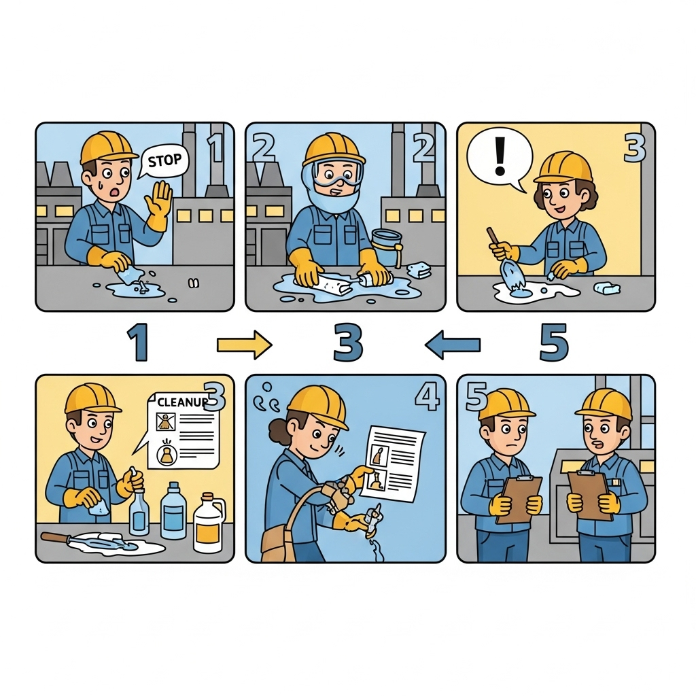
🩹 Emergency First Aid for Chemical Contact
If chemicals get on skin:
Remove contaminated clothing
Rinse with water for at least 20 minutes
Get medical help
If chemicals get in eyes:
Rinse with clean water for at least 20 minutes
Hold eyelids open
Get medical help immediately
If chemicals are swallowed:
DO NOT make the person sick
Rinse mouth with water
Get medical help immediately
Knowledge Check
If you accidentally splash a cleaning chemical in your eyes, what is the first and most important action?
🪜 Ladder Safety - Working at Height
▼
📊 UK Statistics
Falls from height cause about 40 deaths and thousands of injuries each year in UK workplaces. Many involve ladders.
🎬 Watch: FLT Safety
This short video gives some ladder safety pointers.
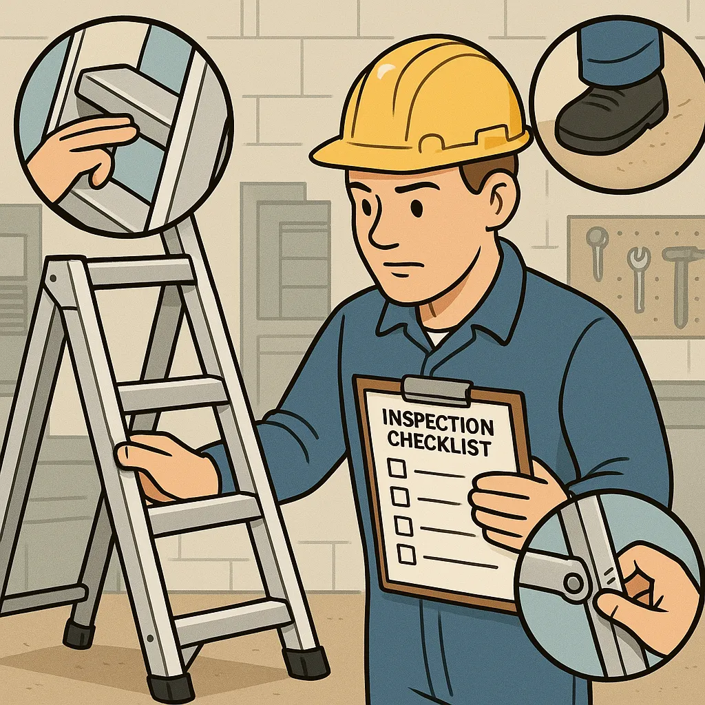
Before You Climb - Ladder Inspection
Check Every Time:
Rungs are not bent, cracked or missing
Side rails are straight and undamaged
Feet have good grip pads
Locks and hinges work properly
No oil, grease or other slippery substances
Labels are clear and readable
📐 The 4-to-1 Rule - Click to Learn
How to position your ladder safely:
For every 4 units of height, the bottom should be 1 unit away from the wall.
Example: If the ladder reaches 4 metres high, place the bottom 1 metre from the wall.
Too steep = ladder falls backwards
Too shallow = ladder slides out
Just right = safe and stable
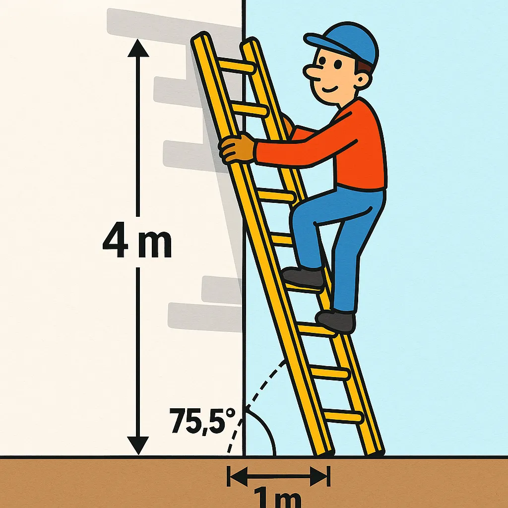
The Three-Point Contact Rule
🤝 Always Keep Three Points of Contact
This means either:
Two hands and one foot on the ladder, OR
Two feet and one hand on the ladder
Never: Carry tools in your hands while climbing. Use a tool belt or rope.
🚫 When NOT to Use Ladders
In high winds or bad weather
When you feel dizzy or unwell
For tasks lasting more than 30 minutes
When you need both hands to work
Near electrical equipment when wet
🔧 Click for: Better Alternatives to Ladders
Mobile Steps
Safer for frequent use
Better stability
Scaffolding
For longer jobs
More space to work
Lifting Platform
Powered access
Best for high work
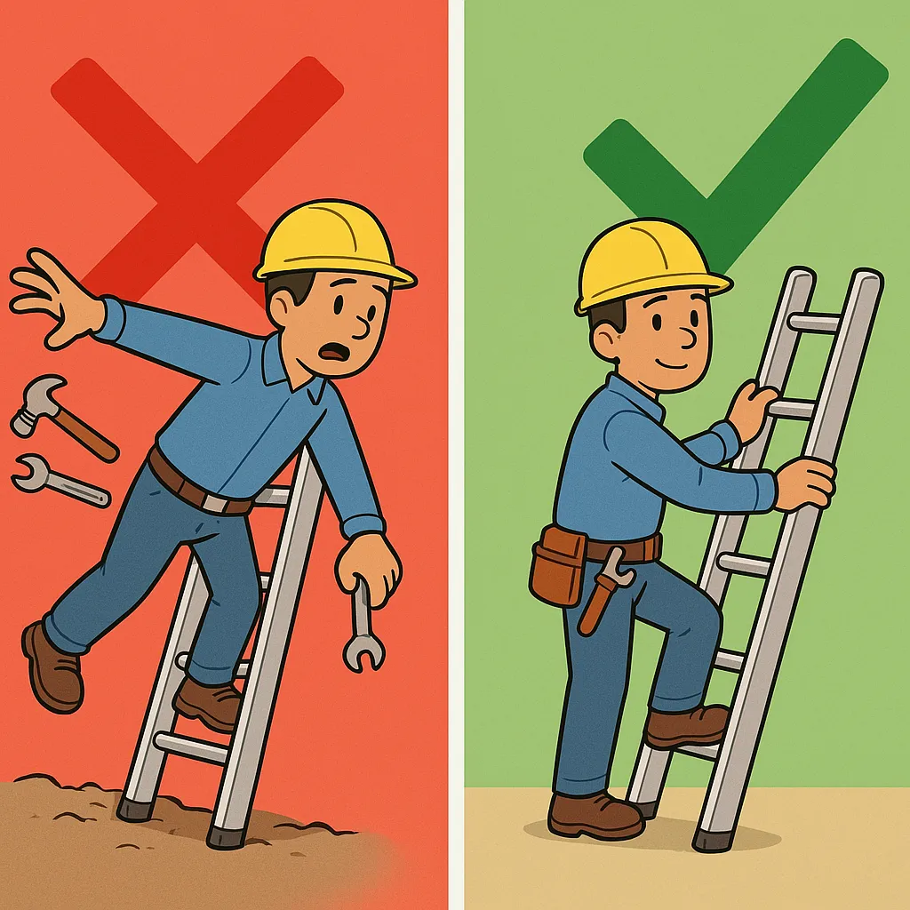
Knowledge Check
When climbing or descending a ladder, what does the 'three-point contact' rule mean?
💪 Manual Handling - Protect Your Back
▼
📈 The Facts
Manual handling injuries account for around one-third of all workplace injuries in UK food factories. Most affect the back.
🎬 Watch: Safe Lifting Technique
This short video demonstrates the correct way to lift.
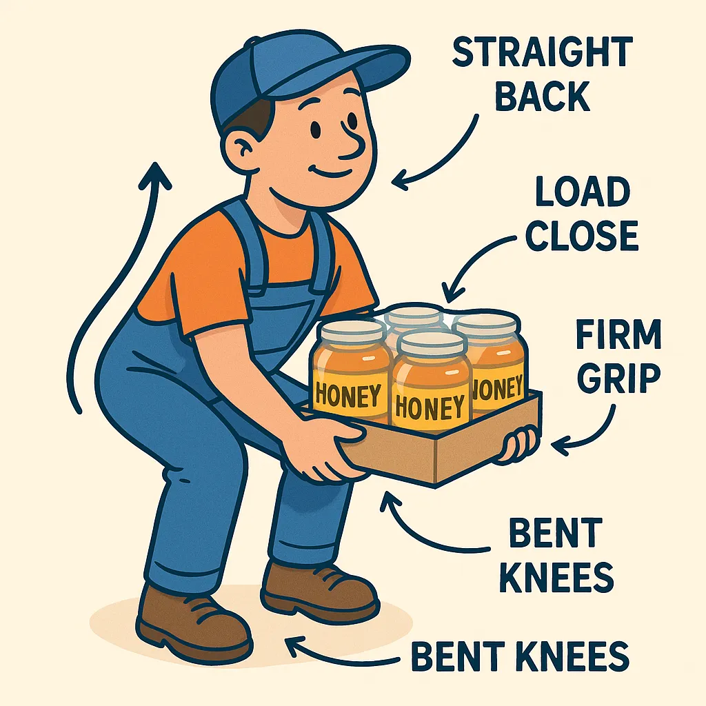
Safe Lifting Technique
The LITE Method:
Look at the load - check weight and contents
Individual capability - can you manage it?
Task requirements - how far to carry?
Environment - is the route clear?
📋 Click for: Step-by-Step Safe Lifting
Plan your lift: Where will you put the load?
Position yourself: Feet apart, one slightly forward
Get a good grip: Use both hands, fingers underneath
Bend your knees: Keep your back straight
Lift smoothly: No sudden movements
Keep load close: Hold it against your body
Move your feet: Don't twist your back
Put down carefully: Same technique in reverse
⚖️ Weight Guidelines
Maximum safe lifting weights (healthy adults):
Men: 25kg from waist height
Women: 16kg from waist height
Overhead lifting: Much less - get help!
If you're unsure: Ask for help or use equipment
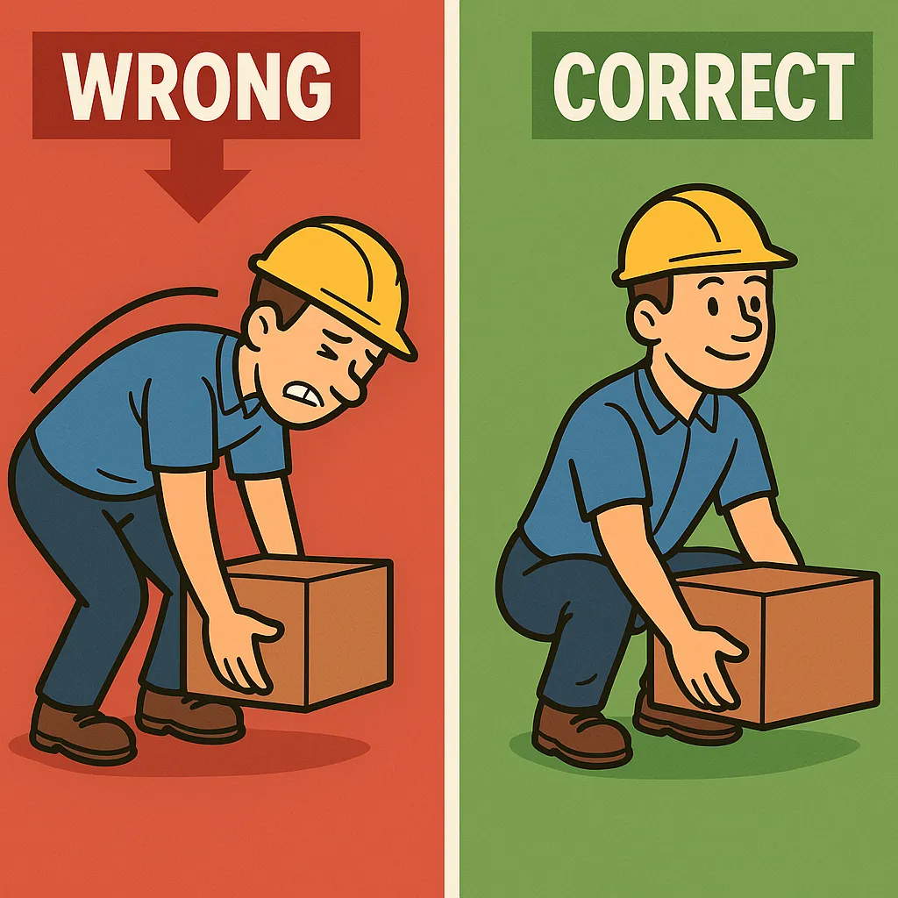
Team Lifting
👥 When Two People Lift Together
Choose people of similar height
One person gives the commands
Practice the lift first
Move at the pace of the slower person
Communicate throughout
🔧 Click to see: Mechanical Aids Available
Wheeled Trolleys
Move loads horizontally
Reduce carrying
Conveyor Belts
Automatic movement
Reduce manual handling
Lifting Tables
Adjust working height
Reduce bending
Vacuum Lifters
Lift awkward items
Reduce manual effort
🧠 Know Your Limits
Don't try to be a hero! If you:
Have back problems
Feel unwell
Are tired
Are unsure about the weight
Then ask for help or use equipment!
Knowledge Check
What is the single most important part of a correct manual lifting technique to protect your back?
📝 Summary and Assessment
▼
🎉 Well Done!
You've completed all the training sections. Here's a quick reminder of the key points:
🚛 Forklifts
Daily safety checks
Walking pace only
Never carry passengers
Stay away from moving trucks
📦 Pallet Trucks
Check before use
Don't exceed weight limits
Push, don't pull
Watch where you're going
⚙️ Machines
Never bypass guards
Report damaged guards
Follow LOTO procedures
No loose clothing
🧪 Chemicals
Read labels carefully
Wear correct PPE
Know spill procedures
Report incidents
🪜 Ladders
Inspect before use
Use 4-to-1 rule
Three-point contact
Consider alternatives
💪 Manual Handling
Use LITE method
Bend knees, not back
Know your limits
Use mechanical aids
🔗 Remember
Health and safety is everyone's responsibility. If you see something unsafe:
Stop the activity if it's immediately dangerous
Report it to your supervisor
Help fix the problem
Don't ignore it!
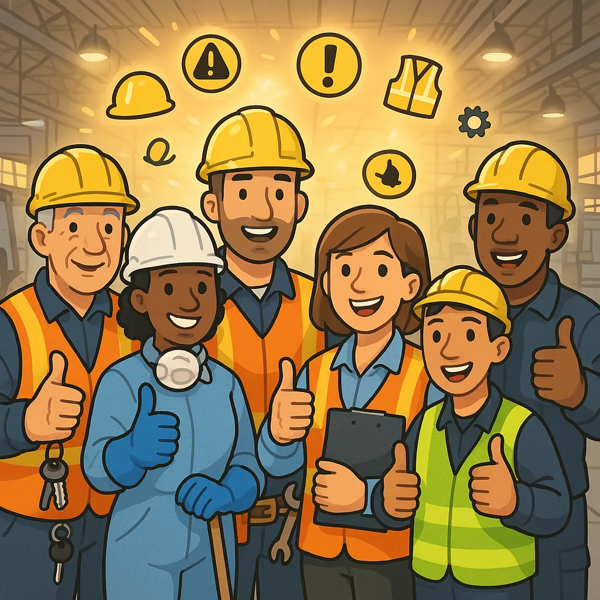
Ready for Your Assessment?
Click the button below to take your Level 2 Health & Safety quiz.
You need 80% to pass (16 out of 20 questions correct)
The quiz will open in a new window. You have unlimited attempts.
Return to this page once you've completed the quiz.
📞 Need Help?
If you have any questions about health and safety:
📧 Email: sam@lovehilltop.com
📞 Phone: 07722838533
🚨 Emergency: 999
This training meets UK Level 2 Health & Safety standards and complies with the Health and Safety at Work Act 1974, COSHH Regulations 2002, and Work at Height Regulations 2005.